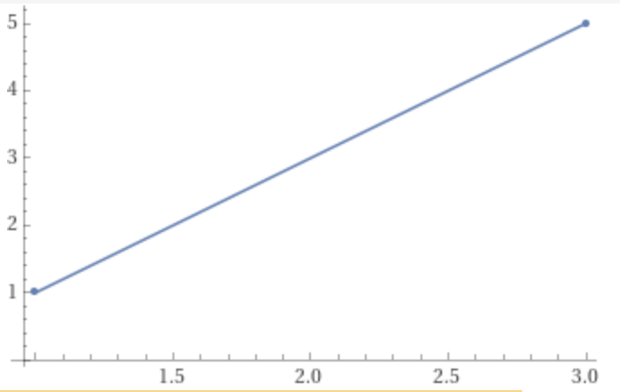

so a couple weeks ago i was thinking of like adaptive music in video games kinda like how in portal 2 in the levels with the gels where if you go fast enough the synth lead comes in for a bit and i thought it would be cool if that was in racing games and i've thought a bit about that idea recently except kinda different
this sentence is getting way too long so im just gonna explain the idea as concisely as possible
on the topic of thinking about game idea i came up with a way to implement this so here's some boring math if you like math scroll down or if you're lazy
TL;DR: take the position of the player at time t and the position of the player at time t + Δt (with Δ being a change of 1 frame [which i think means that the volume is dependent on frame rate]) and take the difference of both positions and use the magnitude as the volume
that tl;dr was pretty long but the idea is pretty convoluted anyways so that is to be expected
anyways if you're genuinely interested in this idea (which i'd be happy to know considering nobody will ever read this) here's the poorly thought-out math
let's say that inside a trigger above a ramp at time t the position of the player is [1, 1] and at time t + Δt the position of the player is [3, 5]
graphed out (not accounting for time or the z-axis assuming your game is in 3d which it would probably be in) it would look like this
(i used Wolfram|Alpha to graph this my apologies) 
let's have 2 vectors equivalent to both points
a = [1, 1], b = [3, 5]
how would we figure out a vector that starts at a's endpoint and ends at b's endpoint
if you've ever done anything involving linear algebra before this is a trivial task
you simply subtract b from a (assuming b is always greater than a which is fine because a vector's magnitude can never be negative)
so if the vector we are trying to find is c c would be
c = b - a = [3, 5] - [1, 1] = [2, 4]
now what we have to do is find c's magnitude
||c|| = sqrt(cx2 + cy2) = sqrt(22 + 42) = sqrt(4 + 16) = sqrt(20) = ~4.47
4.47 is a pretty low volume assuming your audio system uses a range of 1 to 100 for volume so you might want to multiply that by like 10 (4.47 * 10 = 44.7)
anyways in c (which is the only programming language im kinda good at) that would be calculated like this (using 3d vectors this time because i was using 2d vectors to save time)
#include <math.h>
float pos_to_vol(vec3 a, vec3 b, float multiplier) {
vec3 c;
c.x = b.x - a.x;
c.y = b.y - a.y;
c.z = b.z - a.z;
float c_mag = sqrt(pow(c.x, 2) + pow(c.y, 2) + pow(c.z, 2));
c_mag *= multiplier;
return c_mag;
}
anyways that's my game idea and how it would be implemented thank you for reading if you got to this point